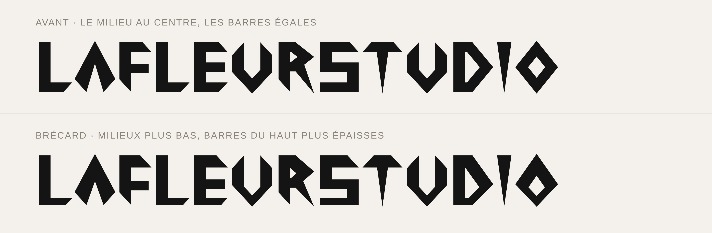

LaFleurStudio · 2026
BRÉCARD
Display en pointes et en losanges : tout en angles, avec le poids en haut.
9 graisses de 100 à 900, comptées en klingon, chacune avec son italique.
Les graisses
De 100 à 900, chacune avec son italique. Toutes ont exactement la même hauteur : seule l'épaisseur du trait change. Leurs noms comptent en klingon : wa'vatlh veut dire « cent », Hutvatlh « neuf cents ».
Testeur
Clique sur le texte pour écrire le tien.
Astuce : les 18 styles sont dans une seule famille « Brécard », de 100 à 900, en droit et en italique (voir « Télécharger »).
Caractères
Majuscules, minuscules, chiffres, ponctuation et symboles, et les accents de toutes les langues d’Europe à alphabet latin : français, allemand, espagnol, polonais, tchèque, hongrois, roumain, turc, baltes, nordiques… 321 caractères, accents combinants compris.
Comment on l'a faite
Brécard est dessinée de zéro, en Python : chaque lettre est faite de segments droits, sans une seule courbe.
Un A en pointe de flèche
Tout part d'un A dessiné à la main : une pointe de flèche, sans barre, avec les pieds coupés en biais vers l'intérieur.
Les autres lettres reprennent ses angles.

Trois règles
Les ronds deviennent des losanges, pointus en haut et en bas (O, C, G, Q, 0, 8).
Les bouts des barres sont coupés en biais vers l'intérieur, comme les pieds du A.
Les traits qui finissent seuls se terminent en coin, comme un I : larges en haut, pointus en bas (I, T, 1, 4, 7, la jambe du R).

Le poids en haut
Les milieux (barres du E et du H, pointes du O) descendent sous le centre, et les barres du haut sont plus épaisses que celles du bas.
Les lettres ont l'air de pousser vers le haut, comme le A.

Neuf graisses
Toutes les épaisseurs viennent d'un seul réglage, de wa'vatlh (100) à Hutvatlh (900).
Les coins s'affinent un peu moins vite que le reste, sinon ils disparaîtraient en wa'vatlh. Hutvatlh est élargie de 12 % pour que les creux ne se bouchent pas.
| Style | Poids | Fût du H | Barre du haut | Largeur |
|---|
Les minuscules
Mêmes règles, et toutes les verticales en coin, comme le i.
Les barres horizontales sont deux fois plus fines que celles des capitales.

Les italiques
Chaque graisse, penchée à 16° : ça file.
Télécharger
Usage personnel : gratuit. Projets perso, études, essais, maquettes.
Usage commercial : sur autorisation. Logo, client, produit vendu, pub, site d'entreprise… écris à info@lafleurstudio.ch. Chaque projet est étudié : l'autorisation peut être gratuite ou payante.
Revente, partage des fichiers et modification interdits sans accord. Texte complet : LICENCE.txt.
Sur un site web
@font-face { font-family: "Brécard"; font-weight: 800;
src: url(Brecard-chorghvatlh.woff2) format("woff2"); }
@font-face { font-family: "Brécard"; font-weight: 800;
font-style: italic;
src: url(Brecard-chorghvatlhItalic.woff2) format("woff2"); }
/* … une règle par style : wa'vatlh 100, cha'vatlh 200,
wejvatlh 300, loSvatlh 400, vaghvatlh 500, javvatlh 600,
Sochvatlh 700, chorghvatlh 800, Hutvatlh 900,
et la même chose en italique
(fichiers sans apostrophe : Brecard-wavatlh…) */